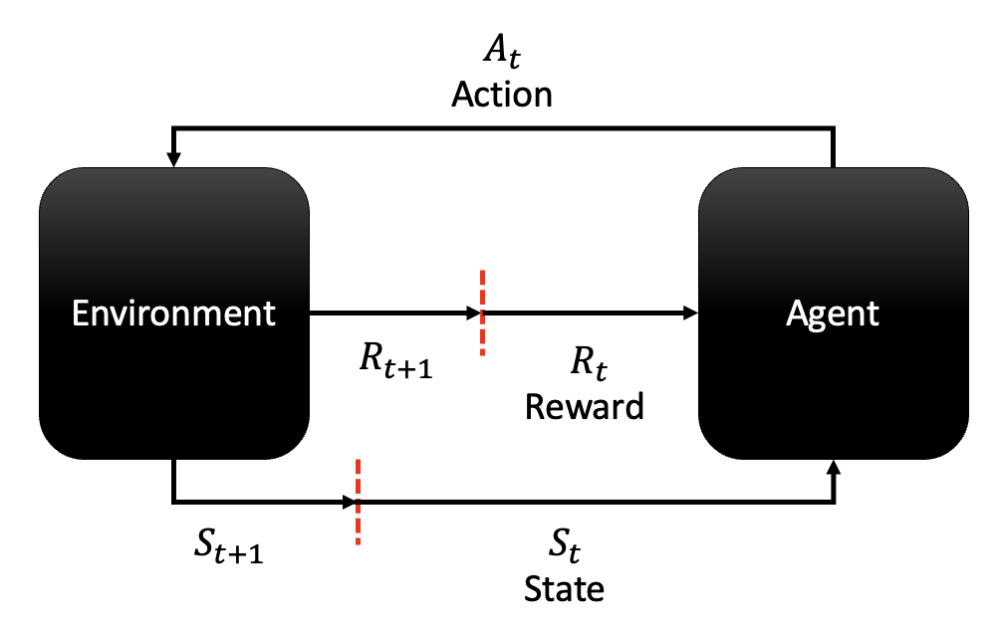
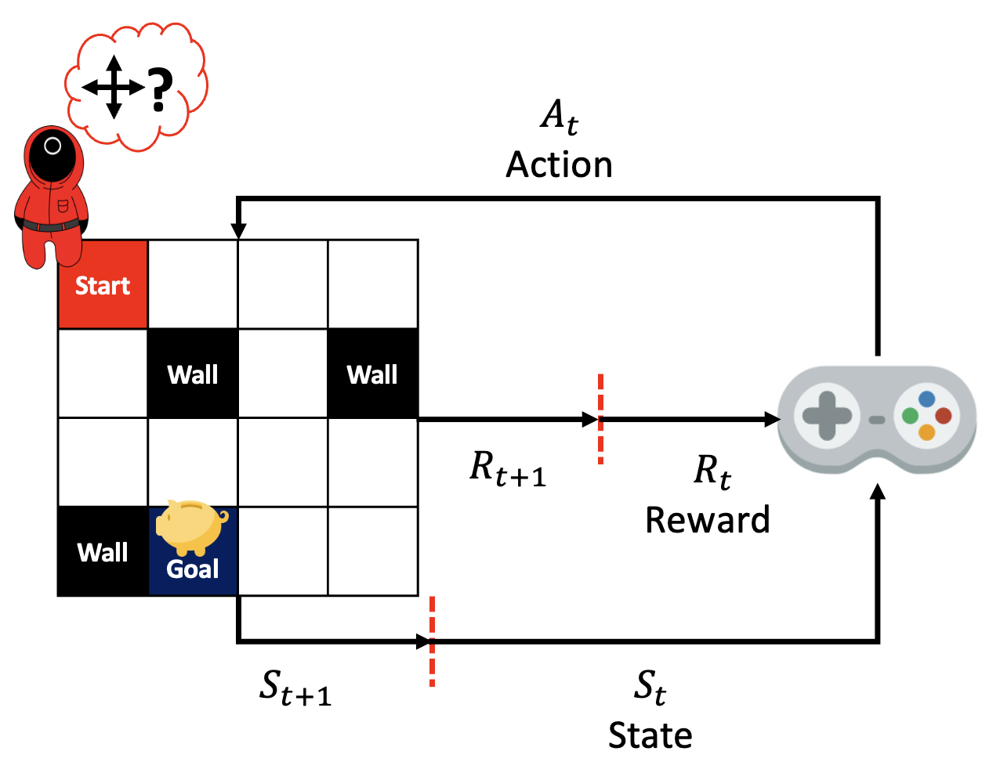
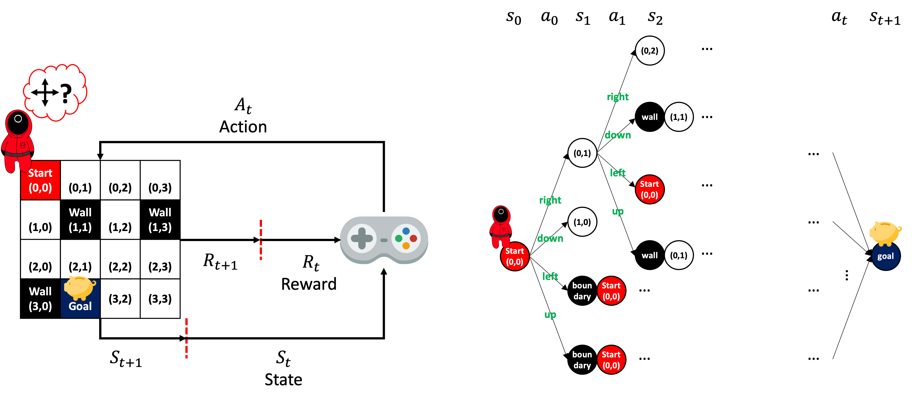
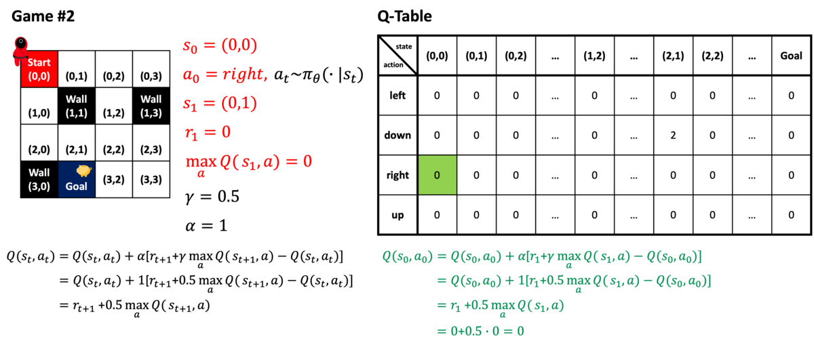
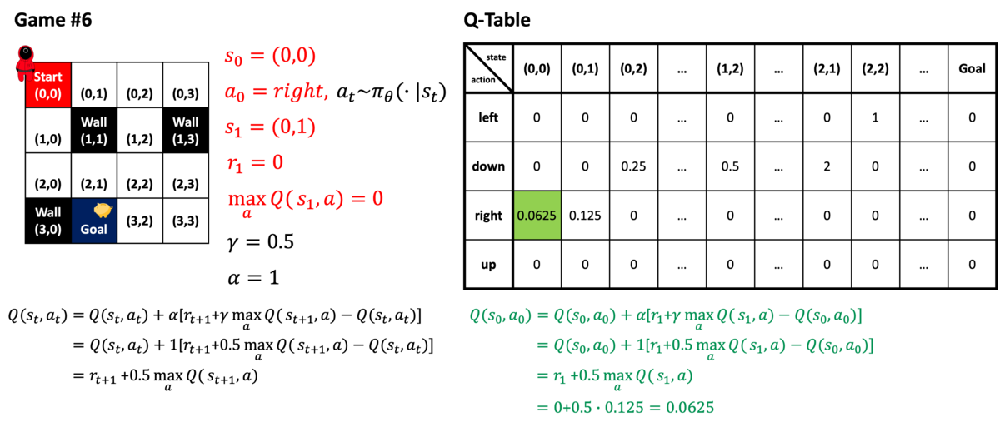

RL Basic
February 16, 2022
Machine learning has 3 basic areas: supervised learning, unsupervised learning, and reinforcement learning. Below is the brief comparison of the areas.
| Area | Supervised Learning | Unsupervised Learning | Reinforcement Learning |
|---|---|---|---|
| Definition | Approach that uses labeled datasets to train algorithms that classifies data or predicts outcomes accurately | Approach to analyze and cluster unlabeled data | Approach that trains a software agent from trials and errors to behave rationally in an environment to maximize the notion of cumulative reward |
| Problem | Classification / Regression | Clustering / Association / Dimensionality reduction | Exploitation / Exploration |
| Algorithm | Linear- or Logistic- regression / SVM / KNN / Random forest / Neural networks / Naive Bayes | K-Means / Apriori / Hierarchical clustering / SVD | Q-Learning / SARSA |
This post will explain core terminologies and equations to understand the various algorithms of reinforcement learning.
It would be helpful to have prior knowledge regarding mathematics, statistics, and machine learning for fully understanding this post. Below pages provide a wealth of information regarding the knowledge.
- Math, Khan Academy
- Statistics Online, PennState Eberly Collge of Science
- Machine Learning Crash Course, Google
|  |
|---|
| Fig 1. Reinforcement Learning Cycle |
Fig 1 shows the key mechanism of the reinforcement learning (RL). An agent and an environment interact every step. The agent makes an action ($A_t$) with respect to the state ($S_t$) at a time step $t$. The environment generates a next state ($S_{t+1}$) for the next time step $t+1$ and the agent get the return (reward or penalty) ($R_{t+1}$). The goal of the RL is to make the agent find the best way of interaction with respect to the given policy and/or goal.
Let’s take an example of a game scenario for describing the RL learning cycle and its mechanism.
|  |
|---|
| Fig 2. Reinforcement Learning Cycle Example |
There is a game whose objective is to move a game character from the start to the goal in a map with a boundary condition (or the wall) and the following rule.
- Reward: if the character finds the goal point.
- Reward: if a game is finished faster than the previous game.
- Penalty: if the character hits the boundary or wall in the map.
Here, the goal of the game is to maximize the reward, and the user will try to find the best way to get the highest reward.
Every time step, a user can control the game character to go to the next point, and there are four options; left, up, right, and down. Every move, the state of the character is changed since the place and surrounding environment of the character differ from the previous time step.
The core RL cycle in Fig 1** can be formulated as follows:
$$ Q(s_{t}, a_{t}) ← Q(s_{t}, a_{t}) + \alpha[r_{t+1} + \gamma\max_{a}Q(s_{t+1}, a) - Q(S_{t}, a_{t})] \tag{1} $$
The following sections will describe the terms to understand the core RL Equation.
- Agent
- State and Observation
- Action
- Policy
- Trajectory
- Return
- Exploration vs. Exploitation
- Greedy Algorithm
- RL Problem
Agent #
An agent is a component who acts in accordance with the Equation 1. The action of the agent is optimized by trials and errors. The obtimized action can achieve the goal to makes the maximum cumulative return (reward or penalty).
State and Observation #
A state $s$ describes the world and an observation $o$ is fragmentary information of a state. Observations are the information that an agent can sense the state of the world. The terms fully observed or partially observed are used when the environment is completely and partially observed respectively. In the case of automobile vehicles, data from various sensors such as radar, lidar, camera, and wheel speed sensors can be examples of observation. The observations can be the velocity, acceleration, yaw rate, the distance between the neighboring cars, and the number of passengers in an ego vehicle. In automotive control systems, the agent checks the various given internal and external states of the vehicle through the observations. After that, the agent decides an action to make an optimal control the vehicle with respect to the state.
Action #
An action $a$ is an agent’s method that allows to interact or update its environment, and transfer between states. An action space is defined as a set of all valid actions in a given environment. In the case of Fig 2, environment in the 4x4 map are given to the game character. In this case, the environment is called as a discrete action space where a finite number of actions are valid to the agent to move on to the next state. The opposite is continuous action space who has an infinite number of actions in a continuous domain for the next state.
Policy #
A policy is a rule of an agent to make an action in an action space. The policy tends to maximize return and there are two types: deterministic policy ($\mu$) and stochastic policy ($\pi$).
$$ a_{t} = \mu(s_t) $$ $$ a_{t} \sim \pi(\cdot|s_{t}) $$
$\cdot$ of the stochastic policy means that all the possible adctions in a state $s$ at time $t$. The above equations for deterministic and stochastic policies are parameterized to be computable functions with respect to a set of parameters (weights and biases of a neural network) so that an optimization algorithm works for the policies. Parameters of deterministic and stochastic policies are denoted as $\theta$ or $\phi$.
$$ a_{t} = \mu_{\theta}(s_t) $$ $$ a_{t} \sim \pi_{\theta}(\cdot|s_{t}) $$
There are two most common kinds of stochastic policies in the deep RL: categorial policies used in discrete action space and diagonal Gaussian policies used in continuous action space.
While using and training stochastic policies, two computations are of importance:
- sampling actions from the policy
- computing log-likelihoods of particular actions, $log\pi_{\theta}(a|s)$.
The log-likelihoods of categorial policies with deterministic action samples $a$ is as follows,
$$ \begin{align} log\pi_{\theta}(a|s) =\text{ }&log[P_{\theta}(S)]_a , \nonumber \newline \text{where } & P_{\theta}(s) \text{ is the last layer of probabilities}, \nonumber \end{align} $$
and the log-likelihoods of diagonal Gaussian policies with stochastic samples $a$ is as follows,
$$ \begin{align} \log\pi_{\theta}(a|s) =\text{ }&-\frac{1}{2} (\sum^{k}_{i=1}(\frac{(a_i-\mu_i)^2}{\sigma^2_i})+k\log2\pi) \nonumber \\ \text{where } & a \text{ is } \mathcal{k}\text{-dimensional action} \nonumber \\ & \mu \text{ is mean} \nonumber \\ & \sigma \text{ is standard deviation} \nonumber \\ \end{align} $$
$$ \begin{align} a =\text{ }& \mu_{\theta}(s) + \sigma_{theta}(s) \odot z, \nonumber \\ \text{where } & \mu_{\theta}(s) \text{ is mean action} \nonumber \\ & \sigma_{theta}(s) \text{ is standard deviation} \nonumber \\ & z \text{ is noise from a spherical Gaussian, } z \sim \mathcal{N}(0, I) \nonumber \end{align} $$
Trajectory #
A trajectory $\tau$ is a sequence of states and actions in the world,
$$ \tau = (s_0, a_0, s_1, a_1,…) $$
$s_0$ is the first state of the world and randomly sampled from the start-state-distribution, sometimes denoted by $\rho_0(\cdot)$:
$$ s_0 \sim \rho_0(\cdot) $$
State transitions (what happens to the world between the state at time $t$, $s_t$, and the state at time $t+1$, $s_{t+1}$), are governed by the natural laws of the environment, and depend only on the most recent action, $a_t$. They can be either deterministic,
$$ s_{t+1} = f(s_t, a_t) $$
or stochastic,
$$ s_{t+1} \sim P(\cdot|s_t, a_t). $$
Action at every step comes from an agent in accordance with its policy.
Fig 2 can be used to describe trajectory in RL, and the trajectory can be graphically presented as the right side of Fig 3.
|  |
|---|
| Fig 3. Reinforcement Learning Trajectory Example |
Return #
A return (or reward) $r$ is generated by the return (or reward) function $R$ in RL. A reward at a specific time $t$ may differ with respect to the dependence with the current state of the world, the action at the same time, and the next state of the world: $$ r_t = R(s_t, a_t, s_{t+1}) \text{ or } R(s_t, a_t) \text { or } R(s_t) $$
In RL, the agent tries to maximize cumulative reward over a trajectory. The cumulative reward is denoted as $R(\tau)$ and accumulated in $T$-step trajectory, finite time domain of the world.
$$ R(\tau) = \sum_{t=0}^T r_{t} $$
The above equation of the return at each time step is valued based on the return of the next step. Such return is the finite-horizon undiscounted return. If the return is undervalued with respect to the time passed from the current time step. Above equation can be refomulated with the discount factor $\gamma \in (0,1)$ and the refomulated equation is the finite-horizon discounted return.
$$ R(\tau) = \sum_{t=0}^T \gamma^{t} r_{t} $$
The return can be from the infinite time domain of the world, and in that case, the equation can be formulated as the infinite-horizon discounted return.
$$ R(\tau) = \sum_{t=0}^\infty \gamma^{t} r_{t} $$
The reason why RL uses only the infinite form with discounted return is that mathematically, an infinite sum of rewards with the discounted factor is always converged to a finite value as various types of infinite series so that the return value can be finite and can be compared with other returns in the different trajectories.
Exploration vs. Exploitation #
Before moving on to expoloration and exploitation in RL, let’s bring back the equation \eqref{rl-core} here, together with RL terminologies.
$$ \begin{align} Q(s_{t}, a_{t}) & ← Q(s_{t}, a_{t}) + \alpha[r_{t+1} + \gamma\max_{a}Q(s_{t+1}, a) - Q(s_{t}, a_{t})] \nonumber \\ & ← (1-\alpha)Q(s_{t}, a_{t}) + \alpha[r_{t+1} + \gamma\max_{a}Q(s_{t+1}, a)] \nonumber \end{align} $$
$$ \begin{align} \text{where } & Q(s_t, a_t) \text{ is the Q or Q-function at time } t, \nonumber \\ & t \text{ is the time step} \nonumber \\ & a \text{ is the action} \nonumber \\ & s \text{ is the state} \nonumber \\ & \alpha \text{ is the learning rate} \nonumber \\ & r \text{ is the return} \nonumber \\ & \gamma \text{ is the discount factor} \nonumber \end{align} $$
From this section, we have seen almost all the definitions except the Q-function $Q(s_t, a_t)$ and the learning rate $\alpha$.
The Q-function refers that the RL algorithm updates, and it is the expected reward with respect to an action $a$ given state $s$ at time $t$ in RL.
In the equation \eqref{rl-core}, $Q(s_t, a_t)$ is the old value of Q-function and $\gamma\max_{a}Q(s_{t+1}, a)$ is the estimation of the optimal future value of Q-function.
The core RL algorithm updates the old value from the right hand side of the equation that adds the temporal difference $r_{t+1} + \gamma\max_{a}Q(s_{t+1}, a) - Q(s_{t}, a_{t})$ to the old value $Q(s_{t}, a_{t})$ with learning rate.
The temporal difference means the difference between the old value $Q(s_{t}, a_{t})$ and new value or temporal difference target $r_{t+1} + \gamma\max_{a}Q(s_{t+1}, a)$.
The learning rate means how much a Q-function in the current state the agent considers against that in the next state.
Now, we know all the terms of the RL core equation. Then, let’s take a look how RL works in accordance with the equation.
Let’s suppose that we are playing the RL cycle example game. The game will be played 6 times successively.
The game uses stochastic policy $\pi$, but very luckily, the agent gets the states from the same probabilistic actions every time: (0,0)->(0,1)->(0,2)->(0,3)->(1,2)->(2,2)->(2,1)->(goal).
The very first game scenario can be visualized as below.
| Fig 4. Reinforcement Learning Example, Scenario #1 |
The right side of the Fig 4 is a Q-Table that is the representation of the values of Q-functions. The Q-Table is initialized to 0 at the begining. After all the way through the journey of the character, only the Q-function, $Q(s_5, a_5)$ with action left given the state (2,1), is updated since only the destination state, goal point, awards the 2 points.
Q-functions with an action awards the best expected return given the prior stateㄴ will be updated successively after 5 times additional games as below figures.
 
Then let’s talk about the exploration and exploitation.
The exploration that searches all neighboring states of the current state. In other words, the exploration searches over the whole sample spaces of an action with high variance.
As opposed to that, exploitation means that searching fewer regions to improve the quality with a small perturbation.
After 6 times successive game in the example, the character finds a path to the goal. With the high-inclination to exploitation, the character will follow the known path. Vice versa, the exploration leads the character to search other paths to the goal. Actually, in the example, there is a shorter path to the goal: (0,0)->(1,0)->(2,0)->(2,1)->(goal). Therefore, in this case, the RL algorithm should incline to exploration to find the better path to the goal.
Greedy Algorithm #
$$ \begin{align} Q(s_{t}, a_{t}) & ← Q(s_{t}, a_{t}) + \alpha[r_{t+1} + \gamma\max_{a}Q(s_{t+1}, a) - Q(s_{t}, a_{t})] \nonumber \\ & ← (1-\alpha)Q(s_{t}, a_{t}) + \alpha[r_{t+1} + \gamma\max_{a}Q(s_{t+1}, a)] \nonumber \end{align} $$
The RL core algorithm finds only one optimal action that maximizes the reward in the next state due to the term, $\max_{a}Q(s_{t+1}, a)$. Therefore, other actions is not considered. Such selection algorthm is called as
greedy algorithm.
With the greedy algorithm, RL core algorithm inclines to exploitation.
Then, what makes RL use exploration? The answer is
$\epsilon$-greedy algorithm.
$$ A \leftarrow \biggl \{\begin{matrix} max_{a}Q(s_{t+1}, a) && \text{with probability 1-}\epsilon \\ \text{a random action} && \text{with probability }\epsilon \end{matrix}\biggr. $$
$\epsilon$-greedy algorithm selects the optimal action that gives the maximized return for a proportion 1-$\epsilon$. A random action is chosen for a proportion $\epsilon$. However, if the RL algorithm is learning by using $\epsilon$-greedy algorithm after exploring diverse paths with high variation, it will become inefficient. Therefore, decaying $\epsilon$-greedy algrithm is used.
The equation \eqref{rl-core} can be replaced as shown above. $\epsilon \in (0,1)$ in $\epsilon$-greedy algorithm is represented $\alpha$ in RL core algorithm.
RL Problem #
No matter what return type and policy are used, an agent tries to maximize the return. As seen in the above examples, there are various trajectory to get the return, and RL learns with trial and error, and updates the Q-Table while finding the path with the maximal expected return. This can be represented as formular and let’s take a look step by step.
State transitions and the policy are stochastic with exploration based learning. The probability of $T$-step trajectory can be represented as below:
$$ \begin{align} P(\tau|\pi) =\text{ }& \rho_0 (s_0) \prod_{t=0}^{T-1} P(s_{t+1} | s_t, a_t) \pi(a_t | s_t). \nonumber \\ \text{where } & \tau \text{ is a sequence of states and action in the environment} \nonumber \\ & \rho_0 (s_0) \text{ is the start-state distribution } \nonumber \\ & P(s_{t+1} | s_t, a_t) \text{ is the state transition} \nonumber \\ & s \text{ is the state} \nonumber \\ & \pi(a_t | s_t) \text{ is the policy} \nonumber \end{align} $$
Similary to expected value in probability theory, the expected return $J(\pi)$ (for whichever measure) can be formulated as following.
$$ J(\pi) = \int_{\tau} P(\tau|\pi) R(\tau) = E_{\tau \sim \pi} [R(\tau)] $$
Finally, the central optimization problem in RL is the optimal policy $\pi^*$
$$ \pi^* = \arg \max_{\pi} J(\pi) $$